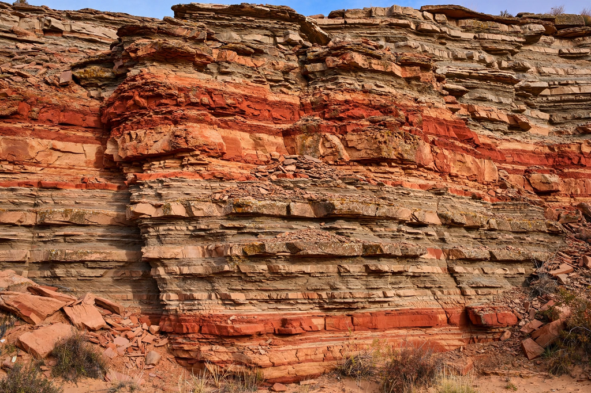

| Sedimentary rock | |
|---|---|
 Sedimentary strata | |
| Main types | Clastic, chemical, organic (biochemical) |
| Examples | Sandstone, shale, limestone, dolomite, coal, rock salt |
| Surface coverage | ~73% of Earth's land surface |
| Share of crust by volume | ~8% (thin veneer) |
Sedimentary rocks are types of rock formed by the accumulation or deposition of mineral or organic particles at Earth's surface, followed by cementation and compaction (lithification). Sedimentation is the collective name for the processes that cause these particles to settle in place. Although sedimentary rocks make up only about 8 percent of the crust by volume, they cover roughly three-quarters of the land surface and contain nearly the entire fossil record and most of the world's groundwater, oil, gas, and coal resources.
The cycle begins with weathering and erosion of pre-existing rocks, producing sediment that is transported by water, wind, ice, or gravity and deposited in basins—in rivers, lakes, deltas, shallow seas, and deep oceans. Burial under further sediment compacts the grains and expels water, while dissolved minerals such as calcite, silica, and iron oxides cement them into solid rock, a set of changes called diagenesis.
Clastic rocks—conglomerate, sandstone, siltstone, and shale or mudstone—are classified by grain size and are built from fragments of older rocks. Chemical rocks precipitate from solution: limestone and dolomite from carbonate waters, chert from silica, and evaporites such as rock salt, gypsum, and anhydrite where saline waters evaporate, as in sabkha environments. Organic rocks, including coal and oil shale, accumulate from the remains of organisms.
Bedding (stratification) is the hallmark of sedimentary rocks; cross-bedding, ripple marks, mud cracks, and graded beds record the environments of deposition and allow geologists to determine original "way-up." The principle of superposition and the lateral continuity of strata underpin stratigraphy and the geological timescale. Fossils in sedimentary rocks provide the primary evidence for the history of life on Earth.
Igneous rock · Metamorphic rock · Stratigraphy · Anhydrite · Sabkha